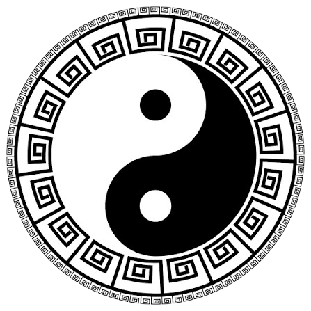
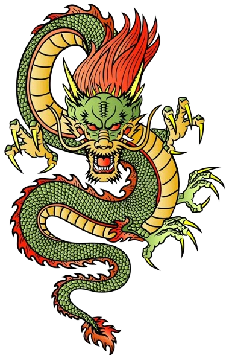

Chinese mythology is a rich collection of tales, legends, and rituals from an ancient civilization. Its narratives originate in oral tradition and blend historical fact with fantasy, heavily influenced by the philosophies of Taoism, Confucianism, and Buddhism. Unlike those of other cultures, its gods are viewed as accessible and just figures who emphasize hard work and family harmony.
Creation of the Universe
There are various narratives in China regarding the origins of the universe and humanity. The most
famous include:
Pangu (P'an Ku): The giant born from a cosmic egg. Using an axe, he separated Yin
(earth) from Yang (sky) and kept them apart for 18,000 years until he died; at that point, his eyes
became the sun and the moon, his breath turned into the wind, and his blood became the rivers.
Nüwa: The serpent-bodied goddess who, feeling lonely, began molding figures out of clay
that came to life, thereby creating humanity.
Gods

Shangti: Supreme God of law, order, justice, and creation
Xiwangmu (Queen Mother of the West): goddess of immortality, queen of the gods and
immortal spirits—specifically female spirits—who inhabited the mystical land of Xihua (‘Western
Flower’)
Guanyin: goddess of mercy and compassion, patroness of sailors and fishermen
Yan Wang: god of death and king of the Underworld
Nuwa and Fuxi: the mother and father of all humanity
Caishen: god of wealth
Chang'e: Moon goddess
Zao-Shen: god of the kitchen
Niu Lang and Zhi Nu: god and goddess of Love
Menshen: guardians of the doorway, they were known as the Gods of Peaceful Sleep, who
protected a room, house, or dwelling from evil spirits and ghosts.
P'an Ku: god of creation
How this reaches us
The global expansion of Chinese mythology is driven by increasing investment from the Asian entertainment industry and its adaptation into Western blockbusters; furthermore, this mythology is highly popular in anime and exerts a significant influence on Japanese anime and video games.
Examples of famous works that use this mythology as a reference are Star Wars, Mulan, Avatar Legends, Miraculous, A Series of Unfortunate Events, etc.